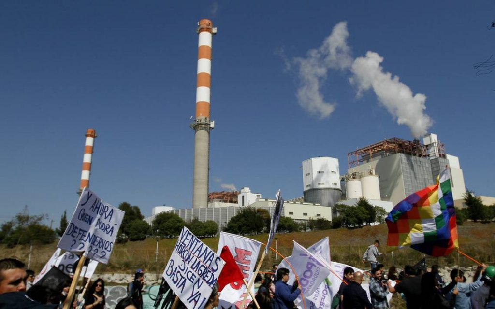

60 años de zona de sacrificio en Ventanas
la fundición de Codelco Ventanas tras casi 60 años de funcionamiento tras los reiterados episodios de intoxicación y contaminación, es apenas una parte del problema global que rodea el cordón industrial en Chile ciudad Quintero y Puchuncaví . Son casi 20 empresas que emiten distintos componentes toxicos y dañinos, y hoy no hay capacidad de identificar con claridad qué es lo que produce las emergencias ni cuál es la empresa en específico responsable. Declaraciones de habitantes de la zona y del cuerpo de sindicato de trabajadores de Ventanas
Locacion y zona de sacrificio
Se encuentra en Chile, la comunidad de Puchuncaví y Quintero
 <
<